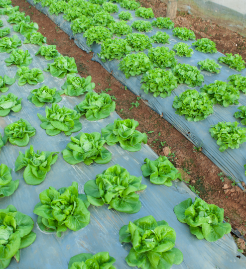

Reflexiono para avanzar
Alumno:
Reflexiono para avanzar
Alumno:
1. ¿Qué tipos de textos informativos y argumentativos están formados por párrafos?
2. Lee el siguiente artículo de opinión.
Buen Vivir, huertas orgánicas
(Fragmento)

Tengo esperanza de que lograremos recuperar la Tierra. A esta madre la hemos ultrajado sin misericordia en los últimos 50 años, pero cada vez hay más conciencia del daño hecho y de la imperiosa necesidad de revertirlo. En las instituciones educativas hay iniciativas que proponen a sus habitantes (estudiantes, empleados, profesores) nuevas y buenas prácticas amigables con el medio ambiente, que redundan en el buen vivir humano. El Buen Vivir no es un concepto casual. Es la traducción más aproximada que se hace al español de la expresión Sumak Kawsay.
Nuestros pueblos ancestrales no tenían la noción de desarrollo ilimitado que se tiene hoy. Hoy se cree que el éxito económico es el máximo ideal y desarrolla la premisa de que lo más eficiente es que cada persona, únicamente, vele por su propio beneficio. Esto ha aislado al ser humano de su comunidad y de la naturaleza.
Todo esto para decir que muchas personas, en diferentes contextos, como las instituciones educativas, están volviendo, al menos, a pensar en acercarse a la Tierra de una manera distinta a aquella de masacrarla con una retroexcavadora para sembrarle una torre de 25 pisos. En la UPB, por ejemplo, nació hace poco el grupo Buen Vivir, huertas orgánicas”, que promueve en los bolivarianos "el arte de sembrar". "Paulatinamente nos hemos impregnado de esta pequeña sensibilización. Buscamos irradiar una práctica cultural de sembrar y cuidar las plantas, que te nazca tener una huerta en tu casa o en tu facultad”, asegura Cristian Velásquez para la Agencia de Noticias UPB.
A Santiago Restrepo Vélez, docente de la UPB, agradezco su enseñanza de viernes por la tarde. Ya con mi papá, de casi 80 años, empezamos a sembrar nuestras primeras canastas con huertas orgánicas caseras.
Recuperado de: https://goo.gl/RCef9P